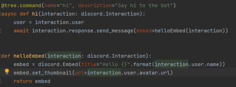
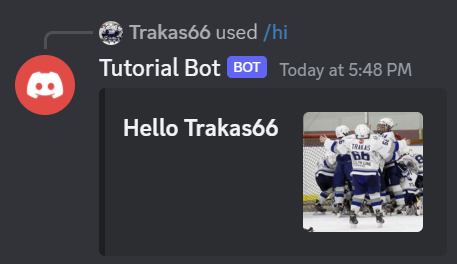
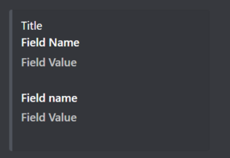
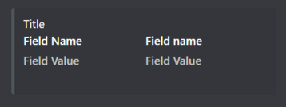
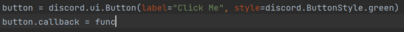
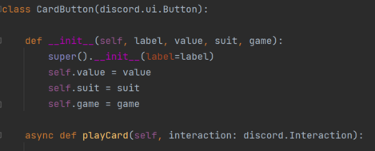
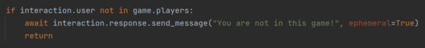

When making a game bot or any kind of more complex bot that needs to display information, you need to
present all necessary information to the user. You can do this in text but it will probably be unorganized
and will depend on the device the user views it on. This is where embeds come in. Embeds are a way for
a message to be sent so it's legible and all the information makes sense. To create an embed you can use
instantiate an object of the discord.Embed class. You can pass properties as keyword arguments, you can edit
the properties on seperate lines of code, or you can do a combination. Personally I like to set the title as
a keyword argument and do everything else seperately. Here's an example of making an embed for our hello bot:

The bottom function will create an embed. When we receive the
hi command we still respond with a message but notice that now we use an embed as a keyword argument instead
of passing in a string for the message. This will execute with the following result:

The title will always be the first thing on the embed followed by the
thumbnail, if there is one, one the right. After this comes the fields. You can add as many fields as you want
to an embed however they will all have a name and a value. Think of the name as kind of a title for the field
and the value as the information.By default the fields will be stacked and each one will appear below the last.
However you can change this by setting a field inline which allows it to go to the right of the previous one.
The following are two pictures of the same embed consisting of two fields except the second one has them inline:

Embeds will be essential for showing
information with your bot.
Another important part of building a game is allowing players to interact with your game. Sure you could
use slash commands but in reality its more practical to only initialize the game with a command. Players shouldn't
have to type out commands to interact with a game. This is where buttons and modals come in handy. Buttons
allow players to make a move with a single click of their mouse. Modals allow players to interact with your game
in various other ways. I assume it's obvious where this would come in handy. To make a button you need to
instantiate the discord.ui.Button class. You can do this in two ways. The first way is to do it directly:

In this option we instantiate a Button object and assign it a callback
function where func is defined somewhere in our code and takes an interaction as an argument. The second way is
to make your own class that inherits from the button class and has a callback method inside of it:

Both of these examples are valid ways of making buttons. However the
first option is more useful when you have set buttons to show and the second option is more useful when you
dynamically create buttons (ex. in a loop). This is done in card games to show a player's hand as you can
tell from the names in the second picture. Modals are a like a form where the user can enter text in multiple
fields and our bot can receive that text. This can be useful in more complicated games or just in sending messages
to other players. These are similar to buttons as you can just instantiate the discord.ui.Modal class or you
can make your own class that inherits from it. The main difference in using modals is instead of the
send_message command you must use the send_modal command.
Almost every game has a finite number of players. Since discord messages with the exception of ephemeral
messages are seen by everyone, how do you stop someone else from playing? This sounds complicated but is actually
very simple. Every time you receive an interaction you must verify that the user is in the game. You can do this
with a simple if statement:

As you can see if the user is
not in the game we send them an ephemeral message telling them that and then we instantly return to cut off the
rest of the function effectively throwing away the interaction. You can also use this method to check if it's
a player's turn or if they have a specific item. Now what is an ephemeral message? An ephemeral
message is a message that can only be seen by the specific user who triggered the interaction. They are not
considered real messages by discord and will not have an id as they will auto-delete within minutes after being
sent or as soon as the user refreshes the app. They are used to give information to a single person such as
their hand in a card game. The only way to have a reference to this message is to use the original message
function and that only works if it's in response to an interaction on the ephemeral message and if the message
is still there.